Localization
In nopCommerce, your store can have several languages installed. However, the customers will only see the data that has been defined in their selected language.
Tip
By default, the English language is installed.
To see or edit the installed languages, go to Configuration → Languages: 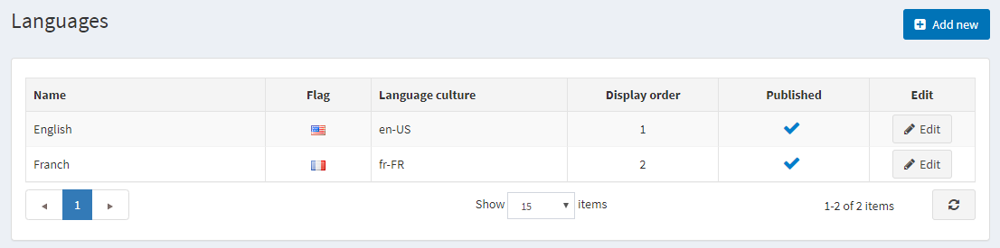
Note
You can download new language packs from the official Marketplace.
Adding a new language
To add a new language, click Add new. In the Add a new language window, define the following settings:
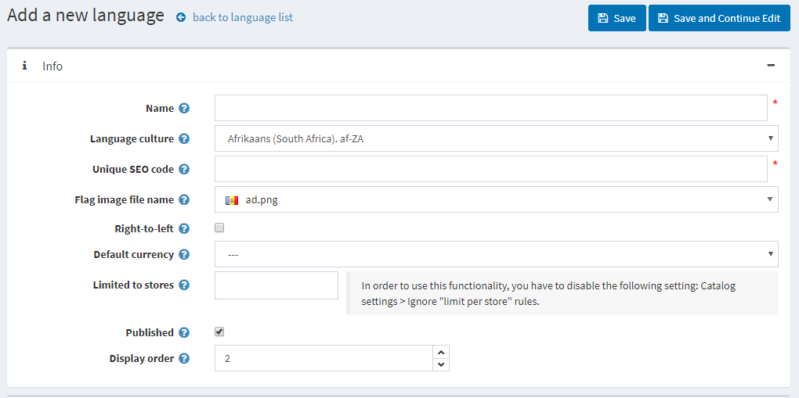
The Name of the new language.
The Language culture — a specific language code (for example, de-AT for Austrian German).
Note
When updating the Language culture field, please make sure the appropriate CLDR package is installed for this culture. You can set CLDR for the specified culture in the Localization panel of the Configuration → Settings → General Settings page.
The Unique SEO code — a two-letter language SEO code used to generate URLs like
http://www.yourstore.com/en/when you have more than one published language.Note
The SEO friendly URLs with multiple languages option should be enabled in the Configuration → Settings → General settings → Localization settings panel.
The Flag image file name — enter the flag image file name. The image should be saved under the
…/images/flagsdirectory. You can also choose an image from a predefined list.Select Right-to-Left if needed (for example, for Arabic or Hebrew).
Note
The active theme should support RTL (have an appropriate CSS style file). This option only affects the public store.
The Default currency for a specific language. If not specified, then the first found one (with the lowest display order) will be used.
Limited to stores option allowing to set this language for a specific store(s). You can choose the store(s) from a precreated list. Leave this field empty if you don't use this option.
Note
To use the store limitation, the Ignore "limit per store" rules (sitewide) option should be disabled in the Configuration → Settings → Catalog settings → Performance panel.
Publish the language to enable it to be visible and selected by visitors to your store.
Display order of the language. 1 represents the top of the list.
Click Save to save the changes.
Note
Since language cultures are only loaded when the application is starting, you have to restart the application once a language is added or deleted.
Note
After adding a new language, you will be able to import and export string resources using the Import resources and Export resources buttons at the top of the page. The String resources panel on the language edit page will allow you to view the existing language resources and add new ones manually.
Import language pack
If you wish to add a new language to your store, you should:
Visit the nopCommerce translations page.
Choose the nopCommerce version and download the desired language pack.
Go to Configuration → Languages and click the AddNew button. 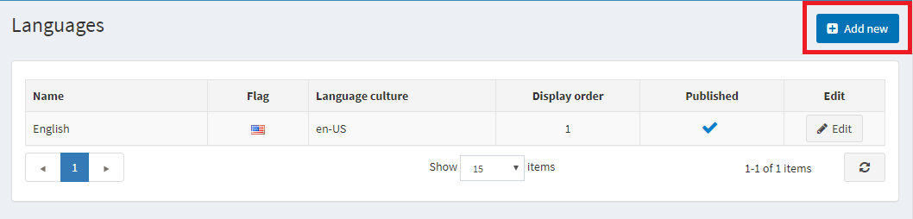
Fill in the required fields and click Save and continue edit. 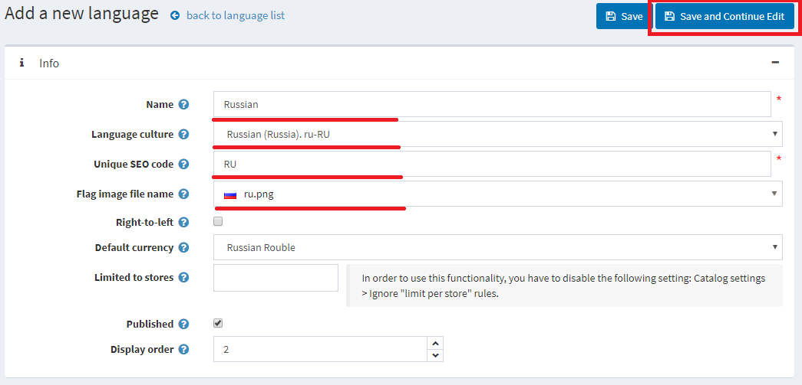
Click Import resources. And specify the path to the language pack file (*.xml) that you downloaded. 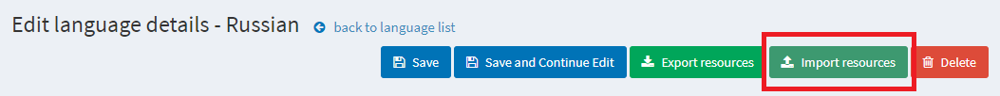
If you found a mistake in translation or want custom naming, you can edit the string resources in the String resources panel.
Manage string resources
Go to Configuration → Languages. The Languages window will be displayed:
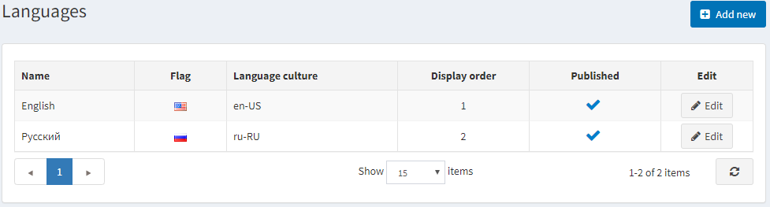
Click the Edit button beside the language. In the Edit language details window, find the String resources panel.
For example, you want to change the name of a panel at the top of the page from "Administration" (on the picture below) to "Control panel."
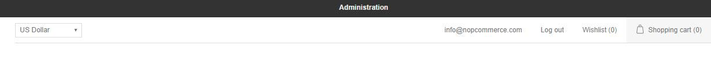
To find the locale resource you need to edit, in the Resource name field, enter "administration." If the resource exists, it will be found. Click Edit beside it.
Enter a new value in the Value field and click Update. 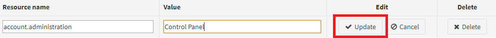
The changes will be applied: 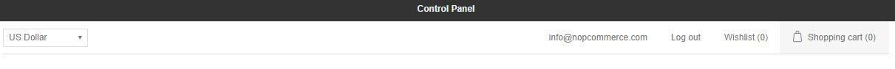
To add a new string resource, use the Add new record panel. This window enables you to add a new resource record to the grid as follows: 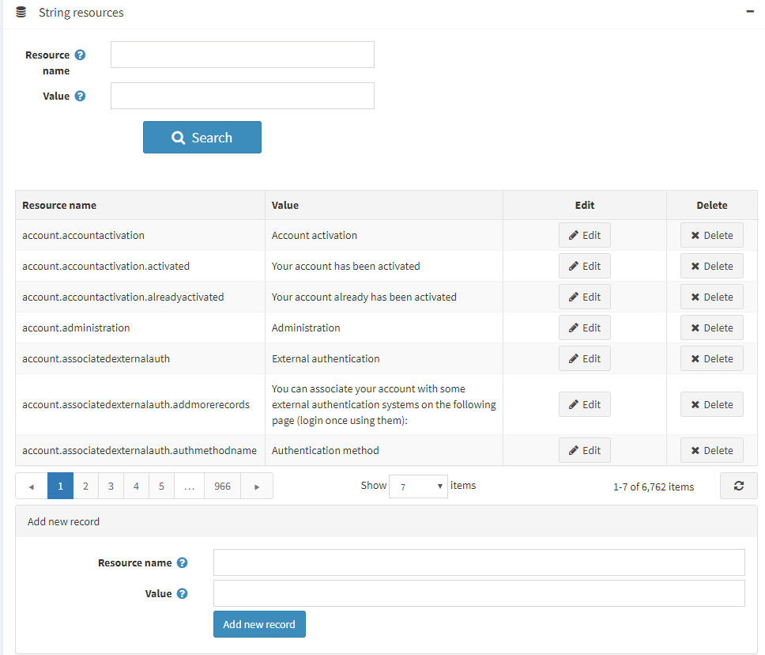
- In the Resource name field, enter the resource string identifier.
- In the Value field, enter a value for this resource string identifier.
Click Save.
Localization settings
To configure localization settings, go to Configuration → Settings → General settings:
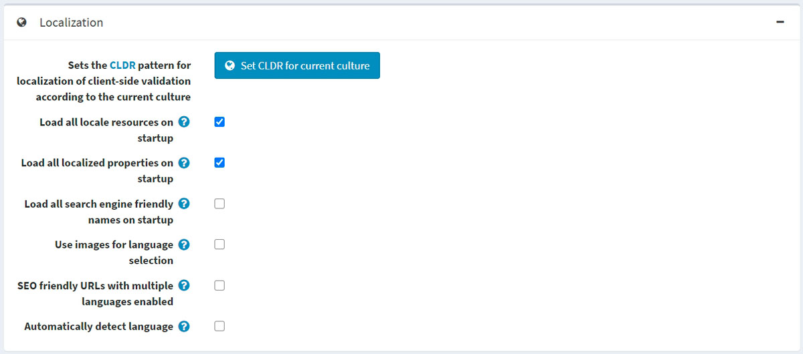
- To set the CLDR pattern for localizing client-side validation to the current culture, click the Set CLDR for current culture button.
- Select the Load all locale resources on startup checkbox to load all locale resources on the application startup. When enabled, all locale resources will be loaded on the application startup. The application start will be slower, but then all pages can be opened much faster.
- Select the Load all localized properties on startup checkbox to load all localized properties on the application startup. When enabled, all localized properties (such as localized product properties) will be loaded on the application startup. The application start will be slower, but then all pages can be opened much faster. It's only used with two or more languages enabled. It is not recommended to enable it when you have a large catalog (several thousand localized entities).
- Select the Load all search engine friendly names on startup checkbox to load all search engine friendly names (slugs) on the application startup. When enabled, all slugs will be loaded on the application startup. The application start will be slower, but then all pages can be opened much faster. It is not recommended to enable it when you have a large catalog (several thousand entities).
- Select the Use images for language selection checkbox to use images instead of language names.
- Select the SEO friendly URLs with multiple languages enabled checkbox to allow SEO-friendly URLs for all languages. When enabled, your URLs will be
http://www.yourStore.com/en/orhttp://www.yourStore.com/ru/(SEO-friendly).Note
You must restart the application after the SEO friendly URLs with multiple languages enabled setting is updated. Otherwise, it can cause errors.
- Select the Automatically detect language checkbox for detecting language based on customer browser settings.
Localize entities
If you have more than one language installed in your store, you will be able to enter some fields displayed to customers in different languages. For example:
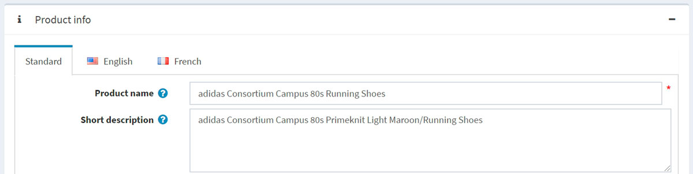
- In the Standard tab, enter the text that will be displayed to customers if the localized fields are not specified.
- In the tabs with language names, enter the localized text.